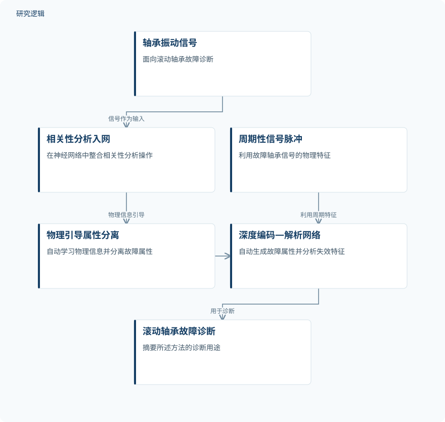

摘要解读
面向含噪传感器数据跨域轴承故障诊断的物理信息深度编码—解析网络
A Physics-Informed Deep Encoding-Parsing Network for Cross-Domain Bearing Fault Diagnosis Under Noisy Sensor Data
解读更新 2026-10-18 08:44 · 依据公开摘要整理，未核验全文细节
轴承振动信号能否支持跨工况、含噪条件下的零样本故障诊断？本文摘要介绍了一种物理信息引导的深度编码—解析方法，并报告其在未知域比较中的表现，为理解跨域诊断思路提供了线索。
文章目录
跨工况诊断的难点在于域适应
轴承振动信号故障诊断被视为提升复杂装备运行安全的重要途径。但摘要指出，现有面向不同工况的零样本诊断方法通常需要大量学习样本，也未能充分建模轴承失效的物理机制及含噪传感器信号特征，这限制了诊断模型的域适应能力。
把物理线索融入特征解耦与解析
作者提出基于物理信息机器学习的零样本轴承故障诊断方法，目标是在含噪传感器数据下改善跨域诊断表现。其一，将相关性分析操作整合进神经网络，建立自动物理信息学习模块，以物理信息引导故障属性分离。
其二，利用故障轴承周期性信号脉冲的物理特征，设计深度编码—解析网络，用于自动生成故障属性并分析失效特征，服务于滚动轴承故障诊断。摘要没有进一步说明网络结构、相关性分析的具体形式或训练细节。
依据摘要整理的研究过程示意


仅概括摘要明确陈述的方法环节，不表达未报告的实验配置或结果。
下载 SVG图示关系说明
实线表示相邻阶段的信息流，虚线表示跨阶段联系或反馈。
轴承振动信号 → 相关性分析入网：信号作为输入；相关性分析入网 → 物理引导属性分离：物理信息引导；周期性信号脉冲 → 深度编码—解析网络：利用周期特征；物理引导属性分离 → 深度编码—解析网络：属性学习；深度编码—解析网络 → 滚动轴承故障诊断：用于诊断
摘要报告未知域含噪比较中的优势
摘要称，与先进方法的比较显示，所提方法在未知域中表现更好，即使传感器数据含噪也是如此。这里是摘要给出的定性结论；摘要未列出具体指标、提升幅度或比较对象名称。
摘要还称该方法显示出跨设备实施的潜力，并可能应对无数据的跨设备自适应故障诊断问题。这是潜力判断，不等同于已验证的跨设备效果。
摘要不足以界定验证范围
仅凭摘要无法判断样本来源与规模、具体工况和噪声设置、未知域如何划分，以及比较方法和评价指标。摘要未报告这些细节，不代表论文正文没有涉及。
摘要也没有交代跨设备实施潜力是否经过直接验证，或“无数据”情形的具体定义。因此，现阶段不宜把这一潜力表述为已证实的无数据迁移能力。
阅读启发：追问零样本与跨设备的边界
阅读启发：进一步阅读时，可关注正文如何定义零样本与未知域、如何构造含噪条件，以及比较方法是否覆盖不同工况。这些信息有助于理解摘要所称优势适用于何种诊断场景。
阅读启发：还可核对跨设备潜力对应的证据类型，并区分实际验证与作者对应用前景的判断；摘要本身没有给出足以回答这些问题的细节。
以上为本站阅读启发与建议，不是论文已验证的结论。